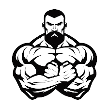

Introdução à Musculação
A musculação é uma prática que envolve exercícios físicos para fortalecer e aumentar a massa muscular. É uma atividade que oferece diversos benefícios para a saúde e o bem-estar.
Benefícios da Musculação
- Aumento da força muscular
- Melhoria da densidade óssea
- Controle de peso e metabolismo
- Melhora da saúde cardiovascular
- Redução do estresse
A Ciência por Trás da Musculação
Musculação é baseada na ciência da fisiologia do exercício. Quando você levanta pesos, seus músculos são estressados e micro-lesões ocorrem. O corpo responde reparando essas lesões e aumentando a força muscular.
Além disso, a ciência da nutrição desempenha um papel crucial, pois proteínas e outros nutrientes são necessários para a recuperação e crescimento muscular.
Contato
Se você tiver perguntas sobre musculação ou precisar de orientação, entre em contato conosco:
Email: contato@musculacaociencia.com